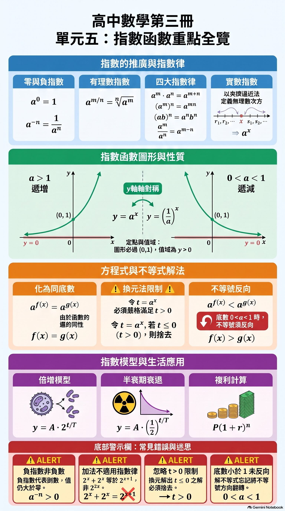

5-1
指數的推廣與指數律
- a⁰ = 1、a⁻ⁿ = 1/aⁿ、a^(m/n) = ⁿ√(aᵐ)：定義都是為了讓指數律繼續成立
- 實數指數用逼近來定義：2^1.41 < 2^√2 < 2^1.42；指數律只管乘、除、乘方，加法不適用
4資訊圖表重點
點一下放大全圖
2互動視覺化
目前取到小數第 1 位
選底數、拉動 m 與 n，看 a^(m/n) 落在 y = aˣ 曲線的哪裡；橘點是整數次方（往左每格 ÷ a）。
1NotebookLM 簡報
3隨堂評量
5-2
指數函數的圖形與性質
- y = aˣ（a > 0、a ≠ 1）：過 (0, 1)、值域 y > 0、x 軸是漸近線；a > 1 遞增、0 < a < 1 遞減
- y = aˣ 與 y = (1/a)ˣ 對稱於 y 軸；y = a^(x−h) + k 的漸近線是 y = k
4資訊圖表重點
點一下放大全圖
2互動視覺化：y = a^(x−h) + k 圖形實驗室
拖曳曲線上的白點讀出坐標；把 a 拉到 1 以下，看圖形怎麼翻轉。
1NotebookLM 簡報
3隨堂評量
5-3
指數的大小比較、方程式與不等式
- 比較大小：化同底、化同指數、找中間值 1、同時乘方
- 換元 t = aˣ 時 t 一定 > 0；底數小於 1 時，不等號要反向
4資訊圖表重點
點一下放大全圖
2互動視覺化
拖曳 x 軸上的 u（黃）與 v（青），比較 aᵘ 和 aᵛ 的大小；再把 a 拉到 1 以下看看。
1NotebookLM 簡報
3隨堂評量
5-4
指數模型與生活應用
- y = A · bᵗ：b > 1 指數成長（細菌、複利），0 < b < 1 指數衰退（半衰期、藥物代謝）
- 平均成長率要用連乘：(1 + r)² = 1.21 ⇒ r = 10%；指數成長最後一定超越線性成長
4資訊圖表重點
點一下放大全圖
2互動視覺化：指數模型實驗室
1NotebookLM 簡報
3隨堂評量
🧠
單元心智圖
- NotebookLM 產生的概念架構（中文版）：點小標題可展開或收合
- 上課可先全部收合，請學生猜每個分支下面有什麼，再逐一打開
🃏
學習卡
- 點卡片（或按空白鍵）翻面看答案；← → 切換上一張、下一張
- 標記「我會了／再複習」，可以只練還不熟的卡片；標記只存在這台電腦的瀏覽器
▶
補充影片（YouTube）
- 貼上 YouTube 網址就能插入；支援 youtube.com/watch、youtu.be 短網址、Shorts，以及含開始時間（t=）的網址
- 插入過的影片會記在這台電腦的瀏覽器裡，下次開啟還在
尚未插入影片
在上方貼上 YouTube 網址後按「插入影片」
在上方貼上 YouTube 網址後按「插入影片」
若影片顯示「錯誤 153」或無法播放，是因為網頁是直接從檔案開啟；請按「在 YouTube 開啟」觀看。
★
總複習
- 封面、單元心智圖、單元重點檢測 10 題（附答案），以及完整資訊圖表（含常見錯誤警示欄）
1NotebookLM 簡報：心智圖與單元重點檢測
▶NotebookLM 教學影片
教學影片「解鎖指數函數：從微觀規律到宏觀爆發」
影片上傳到 YouTube 後，網址會放在這裡
影片上傳到 YouTube 後，網址會放在這裡
4完整資訊圖表

點一下放大